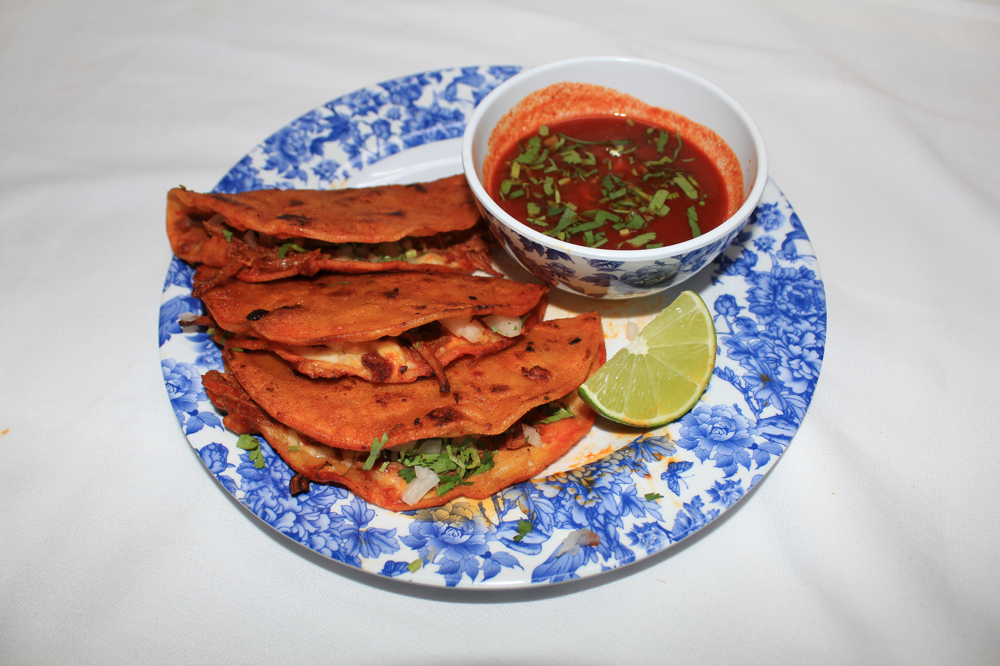
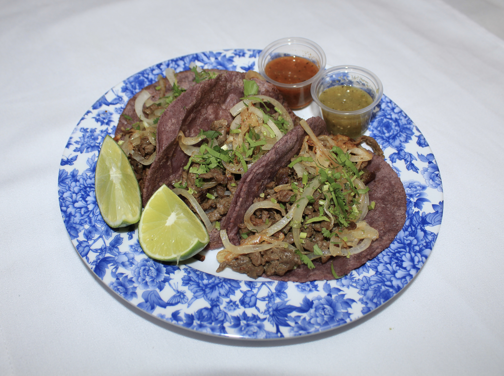
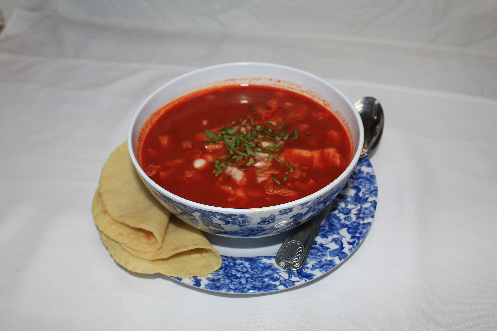
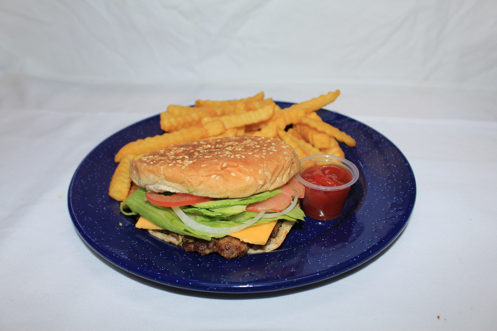
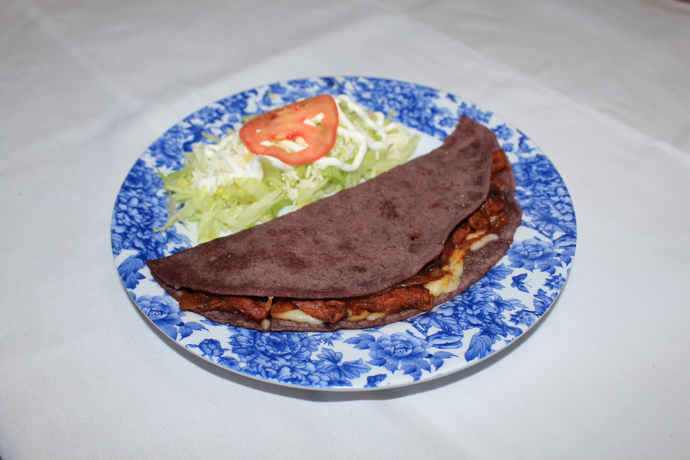
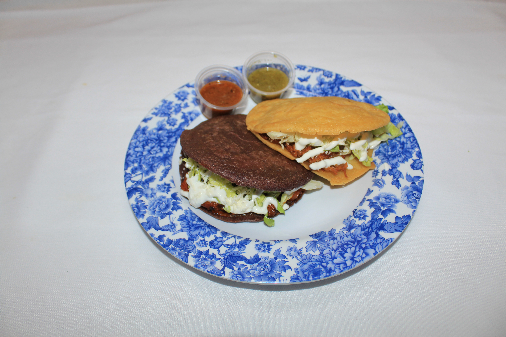

MENU
TACOS
Your choice of meat on a regular or handmade tortilla, from blue or yellow corn, served with onion and cilantro. / Con carne de su preferencia, en tortilla regular o hecha a mano, de maiz azul o amarillo, con cebolla y cilantro.
GORDITAS
From yellow or blue corn masa, and your choice of meat served with lettuce, cheese, and sour cream. / De maiz azul o amarillo, con carne de su preferencia con lechuga, queso y crema.
TOSTADAS
Your choice of meat served with beans, lettuce, cheese and sour cream. / Con carne de su preferencia, frijoles, lechuga, queso y crema.
QUESADILLAS
Your choice of meat and choice of side: beans and rice, french fries or salad. / Con carne de su preferencia y puede acompanar con frijoles y arroz, papas fritas, o ensalada.
BURRITOS
Comes with your choice of meat, beans, rice, grilled onion, roasted bell peppers and cheese.
HAMBURGER
Comes with beef patty, American cheese, lettuce, tomato, onion and avocado. / Con carne, queso, lechuga, tomate, cebolla y aguacate.
TORTAS
Your choice of meat served, with mayo, avocado, tomato, onion and cheese. / Con carne de su preferencia, servida con mayonesa, aguacate, tomate, cebolla y queso.
MENUDO y QUESABIRRIA
Offered on Saturdays and Sundays only.
Breakfast / Desayuno
BREAKFAST TACOS
Your choice of meat (chorizo, bacon, ham, steak, or potatoes) served with egg, beans and cheese. / Con carne de su preferencia (chorizo, tocino, jamon o papas) con huevo, frijoles y queso.
CHILAQUILES
Your choice of beef, chorizo or egg in green or red sauce, with onion, sour cream and cheese, served with beans and potatoes. / Bistec, chorizo o huevo en salsa verde o roja, con crema, queso y cebolla. Servido con frijoles y papas.
HUEVOS RANCHEROS
two fried eggs on a corn tortilla with mexican salsa. Served with rice and beans. / Dos huevos estrellados, montados en tortilla de maiz, con salsa Mexicana. Servido con arroz y frijoles.
Kids Menu
CHICKEN NUGGETS - 6 pcs
With side of french fries. / Con papas fritas.
MINI QUESADILLAS - 2 pcs
Your preference of meat in a flour tortilla. Served with French fries. / Con tortilla de harina y carne a su gusto y con papas fritas.
SALCHI-PULPOS - 5 pcs
Served with french fries / Servido con papas fritas.





